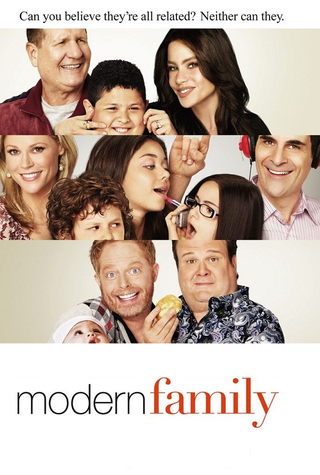
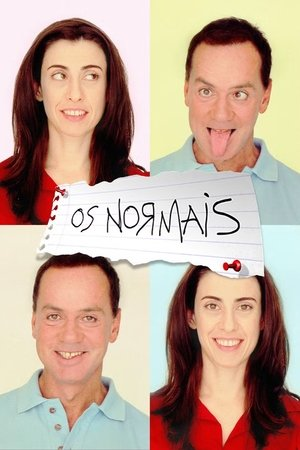
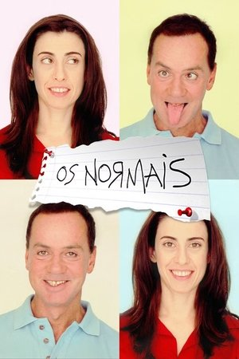
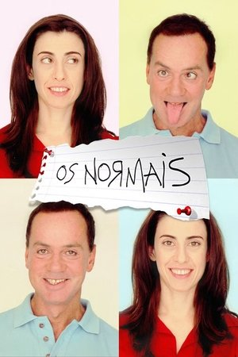

nati
museu de obras feitas pela vida
üìç BR
Favoritos


 


Atividade Recente
Reviews
A Ratinha e o Urso 2017
A Ratinha e o Urso é daquelas séries que aquecem o coração sem fazer esforço. A cada episódio, somos levados para um mundo onde a amizade supera qualquer diferença, com histórias doces, bem-humoradas e cheias de ternura. É impossível não se apaixonar pela cumplicidade entre uma ratinha destemida e um urso gentil, enquanto eles navegam juntos pelos desafios do dia a dia. Simples, leve e necessária para lembrar que o carinho e o cuidado cabem em qualquer tamanho.

Aracane 2024
Arcane é basicamente: traumas, tretas de família, choro garantido e gráficos tão lindos que dá vontade de pausar só pra admirar. E no final… você torce até pra quem não devia.